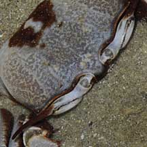
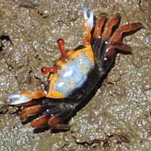

|
|
| crabs text index | photo index |
| Phylum Arthropoda > Subphylum Crustacea > Class Malacostraca > Order Decapoda > Brachyurans |
| Stalk-eyed
crabs Superfamily Ocypodoidea updated Dec 2019
Where seen? Crabs belonging to this family include some of the most commonly encountered on our shores during the day: fiddler crabs (Uca sp.), sand bubbler crabs (Scopimera and Dotilla spp.) and soldier crabs (Dotilla myctiroides). Others like the ghost crabs (Ocypode sp.) are only active at night. Features: Members of the family Ocypodidae are distinguished by eyes on stalks, usually set close together. Some have very long stalks indeed, relative to their body size. These eye-stalks fold away into grooves on the body, so the crab can scramble into hiding places without breaking the stalks. Their bodies tend to be squarish, although some like sand bubbler crabs and soldier crabs have almost spherical bodies. "Ocy" means fast and "podi" foot in Greek. And indeed, most are fleet footed indeed! What do they eat? The smaller members tend to feed on edible bits, sifting the sand or mud for them. Larger ones such as ghost crabs are scavengers and forage on the shores for the recently dead. |
 The eye stalks of a ghost crab 'fold' away into grooves at the side of its body. Tanah Merah, Aug 09 |
 The Sentinel crab has super long eye stalks. Pulau Hantu, May 05 |
 Some fiddler crabs have brightly coloured eye stalks. Chek Jawa, Mar 09 |
| Some Stalk-eyed crabs on Singapore shores |


| Superfamily
Ocypodoidea recorded for Singapore from Wee Y.C. and Peter K. L. Ng. 1994. A First Look at Biodiversity in Singapore in red are those listed among the threatened animals of Singapore from Davison, G.W. H. and P. K. L. Ng and Ho Hua Chew, 2008. The Singapore Red Data Book: Threatened plants and animals of Singapore. **from Ng, Peter K. L. & N. Sivasothi, 1999. A Guide to the Mangroves of Singapore II (Animal Diversity) ***Tan, Leo W. H. & Ng, Peter K. L., 1988. A Guide to Seashore Life. ****Lim, S., P. Ng, L. Tan, & W. Y. Chin, 1994. Rhythm of the Sea: The Life and Times of Labrador Beach. +from The Biodiversity of Singapore, Lee Kong Chian Natural History Museum.
|
Links
References
|